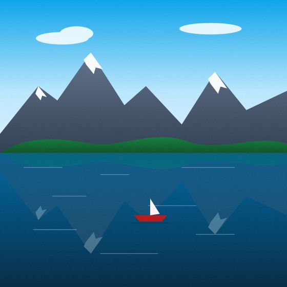
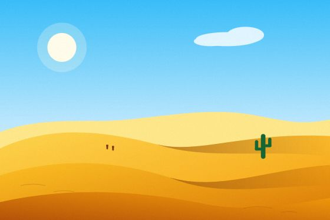
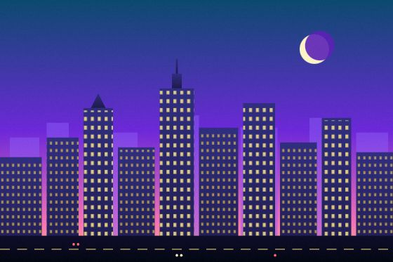

Alpine lake
3 nights · from $640
<o-carousel> turns its children into slides: touch/mouse swipe with momentum and snapping, keyboard, infinite loop without clones, autoplay that respects WCAG 2.2.2, thumbnails, fade effect, responsive slides-per-view and content sliders. Slides are never moved or cloned, so React, Vue and Angular keep full control of them.
Autoplay pauses while the pointer is over the carousel, while keyboard focus is inside, when the tab is hidden and when the carousel is scrolled out of view. The play/pause button is always available, the active dot shows the countdown, and autoplay never starts under prefers-reduced-motion.
Layered peaks and morning mist.
Warm light on calm water.
Soft curves under a clear sky.
The skyline wakes up at dusk.
Add thumbnails for a strip of clickable thumbnails. Each thumbnail uses the slide's data-thumb, or its first image.
per-view accepts any number (fractions show a peek of the next slide). Use per-view-sm|md|lg|xl for the standard breakpoints (viewport width) or a breakpoints object for full control. gap takes pixels or any CSS length.

3 nights · from $640

2 nights · from $410
5 nights · from $1,280
4 nights · from $890
6 nights · from $1,720

2 nights · from $520
per-view="auto" keeps each slide's own width, so cards of any size scroll in a row. .o-carousel-cards gives cards a default width (--o-carousel-card-w) and lets their shadows breathe.


“Orion replaced four UI libraries in our admin app.”— Priya Patel, CTO
“Accessible out of the box. Our audit passed first time.”— Lucas Dubois, Design lead
“One script tag and our Vue and React teams share the same components.”— Hana Sato, Engineering manager


| Attribute | Type | Default | Description |
|---|---|---|---|
| autoplay | number | 0 | Milliseconds between slides; a bare attribute means 5000. 0 disables. |
| loop | boolean | false | Infinite loop (clone-free). Needs at least ceil(per-view) + 1 slides, otherwise it rewinds. |
| rewind | boolean | false | Without loop, next() on the last slide goes back to the first. |
| per-view | number | 'auto' | 1 | Slides visible at once (fractions allowed). auto keeps each slide's own width. |
| per-view-sm / -md / -lg / -xl | number | 'auto' | Overrides from 576 / 768 / 992 / 1200 px viewport width. | |
| breakpoints | object | {} | { "768": { "perView": 2, "gap": 16 } } (min-width keys). |
| gap | number | CSS length | 0 | Space between slides. |
| effect | 'slide' | 'fade' | slide | Transition effect (fade forces one slide per view). |
| arrows | boolean | false | Previous / next buttons. |
| dots | boolean | 'outside' | false | Pagination dots over the slides, or below them with dots="outside". |
| thumbnails | boolean | false | Thumbnail strip (data-thumb on a slide, else its first image). |
| pause-on-hover | boolean | true | Pause autoplay while hovered (set "false" to disable). |
| draggable | boolean | true | Swipe / mouse drag with momentum (set "false" to disable). |
| center | boolean | false | Center the active slide (use with fractional per-view). |
| step | number | 'page' | 1 | Slides moved by arrows / keyboard / autoplay. |
| aspect | string | Slide aspect ratio, e.g. 16/9. | |
| speed | number | 420 | Transition duration in ms (0 under reduced motion). |
| index | number | 0 | Current index (setting it jumps without animation). |
| label | string | Accessible name of the carousel region. | |
| texts | object | Per-instance strings (prev, next, play, pause, goTo, slideOf…). |
| Member | Description |
|---|---|
| next() / prev() | Move by step. |
| goTo(index, { animate = true }) | Go to a position (a page when several slides are visible). |
| play() / pause() | Start or stop autoplay (same as the play/pause button). |
| refresh() | Re-read slides and options (automatic when children change). |
| index, count, slides, playing | Current position, number of positions, slide elements, autoplay running. |
| Event | Detail | Description |
|---|---|---|
| o-change | { index, previous } | The active position changed. |
| o-play / o-pause | Autoplay was started / stopped by the user or the API. |
Classes: .o-carousel-img (cover image), .o-carousel-caption, .o-carousel-cards, .o-carousel-nodrag (area that never starts a drag). Variables: --o-carousel-gap, --o-carousel-radius, --o-carousel-thumb-h, --o-carousel-card-w.
| Key | Action |
|---|---|
| ← / → | Previous / next slide (mirrored in right-to-left layouts). |
| Home / End | First / last position. |
| Tab | Moves through the carousel, the buttons and the visible slides only (hidden slides are inert). |
Follows the WAI-ARIA carousel pattern: the host is a region with aria-roledescription="carousel", each slide is a group labelled "n of N", and user navigation is announced to screen readers. Images in slides may use data-src — slides next to the visible ones are loaded ahead of time.
Render slides as normal children — they are never moved, so keyed lists in React/Vue/Angular update in place and the carousel re-reads them automatically. Listen to o-change through a ref in React.